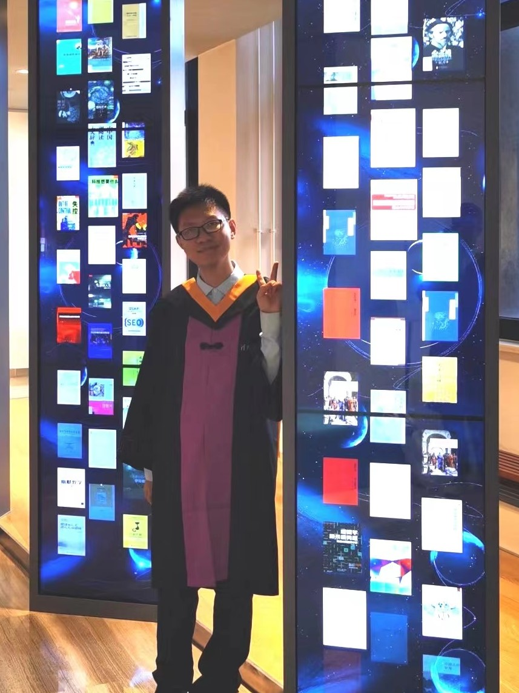

|
 |
2025-2026: Video Generation Algorithm Engineer (K-Star Talent Program), Kling Team, Kuaishou Technology |
From 2025 to 2026, Hong Chen was a Video Generation Algorithm Engineer on the Kling team at Kuaishou Technology, which he joined through the K-Star Talent Program. He worked on the pre-training of large-scale video generation foundation models, including the joint audio-video generation scheme of Kling 3.0 and the pre-training of Kling 4.0.
He received his Ph.D. from the Department of Computer Science and Technology, Tsinghua University in 2025, advised by Prof. Wenwu Zhu. His doctoral research focused on multimodal generative models, including customized text-to-image/text-to-video generation, disentangled representation learning, and multimodal large language models. He received his B.E. from the Department of Electronic Engineering, Tsinghua University in 2020.
His research interests include multimodal generative AI (video/image/audio generation, diffusion models), multimodal large language models, and curriculum/automated machine learning. He has published over 40 papers at venues such as NeurIPS, ICML, ICLR, CVPR, KDD, ACM MM and IEEE TPAMI. According to Google Scholar, his work has received 2,900+ citations with an h-index of 27 (as of Sept. 2026).
Kuaishou Technology, Kling Team — Video Generation Algorithm Engineer, K-Star Talent Program (2025 - 2026)
Pre-training of the Kling video generation foundation models:
Joint audio-video generation (Kling 3.0): designed and validated a multi-stream audio-video joint generation DiT architecture to address the quality gap caused by separately trained audio and video models. The scheme was shipped in Kling 3.0 with clear improvements over Kling 2.6.
DiT model scaling (Kling 4.0): designed and experimentally validated the MoE scaling scheme for DiT models, balancing efficiency and performance during scale-up. The scheme was adopted in the pre-training of Kling 4.0.
Inference algorithm: designed a dynamic classifier-free guidance (CFG) algorithm for multi-step audio-video generation, which keeps generation stable while reducing the "AI look" of generated videos.
Tencent, WeChat — Research Intern, Recommendation Group (2022)
Behavior-aware cross-domain recommendation: automatic source-domain behavior selection with importance perception, validated in the industrial setting and published at WWW 2023.
Tsinghua University, Department of Computer Science and Technology — Ph.D. (2020 - 2025)
Advisor: Prof. Wenwu Zhu. Research direction: multimodal generative models
Tsinghua University, Department of Electronic Engineering — B.E. (2016 - 2020), rank 11/287
National Scholarship (国家奖学金), 2024
Tsinghua Alumni — Department of Computer Science Tang Zesheng Scholarship (唐泽圣奖学金), 2023-2024
Tsinghua Friends — Lingjun Leadership Scholarship (清华之友灵均领航奖学金), 2022-2023
1st Place, NeurIPS 2021 MetaDL Challenge (few-shot learning), team member of the Meta Delta++ system, 2021
Tsinghua University Outstanding Graduate / Beijing Excellent Graduate, 2020
National Encouragement Scholarship (国家励志奖学金), 2017-2018 and 2018-2019
Tsinghua University Scholarship, 2016-2017
Reviewer for NeurIPS, ICML, ICLR and KDD (2022 - 2025)
(Selected from 60+ papers. Full list on Google Scholar.)
VideoDreamer: Customized Multi-Subject Text-to-Video Generation with Disen-Mix Finetuning on Language-Video Foundation Models, IEEE Transactions on Multimedia (TMM), 2025
Hong Chen, Xin Wang, Guanning Zeng, Yipeng Zhang, Yuwei Zhou, Feilin Han, Yaofei Wu, Wenwu Zhu
Multi-modal Generative AI: Multi-modal LLMs, Diffusions, and the Unification, IEEE Transactions on Circuits and Systems for Video Technology (TCSVT), 2025
Xin Wang, Yuwei Zhou, Bin Huang, Hong Chen, Wenwu Zhu
Automated Disentangled Sequential Recommendation with Large Language Models, ACM Transactions on Information Systems (TOIS), 2025
Xin Wang, Hong Chen, Zirui Pan, Yuwei Zhou, Chaoyu Guan, Lifeng Sun, Wenwu Zhu
Dynamic Mixture of Curriculum LoRA Experts for Continual Multimodal Instruction Tuning, ICML 2025
Chendi Ge, Xin Wang, Zeyang Zhang, Hong Chen, Jiapei Fan, Longtao Huang, Hui Xue, Wenwu Zhu
Modularized Self-Reflected Video Reasoner for Multimodal LLM with Application to Video Question Answering, ICML 2025
Zihan Song, Xin Wang, Zi Qian, Hong Chen, Longtao Huang, Hui Xue, Wenwu Zhu
Modular-Cam: Modular Dynamic Camera-view Video Generation with LLM, AAAI 2025
Zirui Pan, Xin Wang, Yipeng Zhang, Hong Chen, Kwan Man Cheng, Yaofei Wu, Wenwu Zhu
Behavior Importance-Aware Graph Neural Architecture Search for Cross-Domain Recommendation, AAAI 2025
Chendi Ge, Xin Wang, Ziwei Zhang, Yijian Qin, Hong Chen, Haiyang Wu, Yang Zhang, Yuekui Yang, Wenwu Zhu
ScenarioDiff: Text-to-Video Generation with Dynamic Transformations of Scene Conditions, International Journal of Computer Vision (IJCV), 2025
Yipeng Zhang, Xin Wang, Hong Chen, Chenyang Qin, Yibo Hao, Hong Mei, Wenwu Zhu
ModuleTeam: Open-Set Multi-Conditional Image Generation with Training-Free Latent Mixture of Any Control Module, ACM MM 2025
Yuwei Zhou, Xin Wang, Hong Chen, Yipeng Zhang, Zeyang Zhang, Wenwu Zhu
DiViCo: Disentangled Visual Token Compression for Efficient Large Vision-Language Model, IEEE TCSVT, 2025
Xin Wang, Zirui Pan, Hong Chen, Wenwu Zhu
Disentangled Representation Learning, IEEE Transactions on Pattern Analysis and Machine Intelligence (TPAMI), 2024
Xin Wang, Hong Chen, Si'ao Tang, Zihao Wu, Wenwu Zhu
VTimeLLM: Empower LLM to Grasp Video Moments, CVPR 2024
Bin Huang, Xin Wang, Hong Chen, Zihan Song, Wenwu Zhu
DisenBooth: Identity-Preserving Disentangled Tuning for Subject-Driven Text-to-Image Generation, ICLR 2024
Hong Chen, Yipeng Zhang, Simin Wu, Xin Wang, Xuguang Duan, Yuwei Zhou, Wenwu Zhu
DisenStudio: Customized Multi-subject Text-to-Video Generation with Disentangled Spatial Control, ACM MM 2024
Hong Chen, Xin Wang, Yipeng Zhang, Yuwei Zhou, Zeyang Zhang, Siao Tang, Wenwu Zhu
DisenDreamer: Subject-Driven Text-to-Image Generation with Sample-aware Disentangled Tuning, IEEE TCSVT, 2024
Hong Chen, Yipeng Zhang, Xin Wang, Xuguang Duan, Yuwei Zhou, Wenwu Zhu
VERIFIED: A Video Corpus Moment Retrieval Benchmark for Fine-Grained Video Understanding, NeurIPS 2024 (Datasets and Benchmarks)
Houlun Chen, Xin Wang, Hong Chen, Zeyang Zhang, Wei Feng, Bin Huang, Jia Jia, Wenwu Zhu
Post-training Quantization with Progressive Calibration and Activation Relaxing for Text-to-Image Diffusion Models, ECCV 2024
Siao Tang, Xin Wang, Hong Chen, Chaoyu Guan, Zewen Wu, Yansong Tang, Wenwu Zhu
Disentangled Continual Graph Neural Architecture Search with Invariant Modular Supernet, ICML 2024
Zeyang Zhang, Xin Wang, Yijian Qin, Hong Chen, Ziwei Zhang, Xu Chu, Wenwu Zhu
CurBench: Curriculum Learning Benchmark, ICML 2024
Yuwei Zhou, Zirui Pan, Xin Wang, Hong Chen, Haoyang Li, Yanting Huang, Zhennan Xiong, Fangzhou Xiong, Peiyang Xu, Shengnan Liu, Wenwu Zhu
Large Language Model with Curriculum Reasoning for Visual Concept Recognition, KDD 2024
Yipeng Zhang, Xin Wang, Hong Chen, Jiapei Fan, Weigao Wen, Hui Xue, Hong Mei, Wenwu Zhu
Dynamic Spatio-Temporal Graph Reasoning for VideoQA with Self-Supervised Event Recognition, IEEE Transactions on Image Processing (TIP), 2024
Jie Nie, Xin Wang, Runze Hou, Guohao Li, Hong Chen, Wenwu Zhu
Curriculum Learning: Theories, Approaches, Applications, Tools, and Future Directions in the Era of Large Language Models, The Web Conference (WWW) 2024, Tutorial
Xin Wang, Yuwei Zhou, Hong Chen, Wenwu Zhu
LLM4VG: Large Language Models Evaluation for Video Grounding, arXiv 2023
Wei Feng, Xin Wang, Hong Chen, Zeyang Zhang, Houlun Chen, Zihan Song, Yuwei Zhou, Yuekui Yang, Haiyang Wu, Wenwu Zhu
Grounding-Prompter: Prompting LLM with Multimodal Information for Temporal Sentence Grounding in Long Videos, arXiv 2023
Houlun Chen, Xin Wang, Hong Chen, Zihan Song, Jia Jia, Wenwu Zhu
Joint Data-Task Generation for Auxiliary Learning, NeurIPS 2023
Hong Chen, Xin Wang, Yuwei Zhou, Yijian Qin, Chaoyu Guan, Wenwu Zhu
Cross-domain Recommendation with Behavioral Importance Perception, The Web Conference (WWW) 2023
Hong Chen, Xin Wang, Ruobing Xie, Yuwei Zhou, Wenwu Zhu
Global-Local GraphFormer: Towards Better Understanding of User Intentions in Sequential Recommendation, ACM MM Asia 2023
Hong Chen, Bin Huang, Xin Wang, Yuwei Zhou, Wenwu Zhu
TIVA-KG: A Multimodal Knowledge Graph with Text, Image, Video and Audio, ACM MM 2023
Xin Wang, Benyuan Meng, Hong Chen, Yuan Meng, Ke Lv, Wenwu Zhu
Diff4Rec: Sequential Recommendation with Curriculum-scheduled Diffusion Augmentation, ACM MM 2023
Zihao Wu, Xin Wang, Hong Chen, Kaidong Li, Yi Han, Lifeng Sun, Wenwu Zhu
Adaptive Disentangled Transformer for Sequential Recommendation, KDD 2023
Yipeng Zhang, Xin Wang, Hong Chen, Wenwu Zhu
Intra- and Inter-Modal Curriculum for Multimodal Learning, ACM MM 2023
Yuwei Zhou, Xin Wang, Hong Chen, Xuguang Duan, Wenwu Zhu
Curriculum-Listener: Consistency- and Complementarity-Aware Audio-Enhanced Temporal Sentence Grounding, ACM MM 2023
Houlun Chen, Xin Wang, Xiaohan Lan, Hong Chen, Xuguang Duan, Jia Jia, Wenwu Zhu
Mixup-Augmented Temporally Debiased Video Grounding with Content-Location Disentanglement, ACM MM 2023
Xin Wang, Zihao Wu, Hong Chen, Xiaohan Lan, Wenwu Zhu
Curriculum Co-disentangled Representation Learning across Multiple Environments, ICML 2023
Xin Wang, Zirui Pan, Yuwei Zhou, Hong Chen, Chendi Ge, Wenwu Zhu
Multi-Task Graph Neural Architecture Search with Task-aware Collaboration and Curriculum, NeurIPS 2023
Yijian Qin, Xin Wang, Ziwei Zhang, Hong Chen, Wenwu Zhu
Curriculum Multi-Negative Augmentation for Debiased Video Grounding, AAAI 2023
Xiaohan Lan, Yitian Yuan, Hong Chen, Xin Wang, Zequn Jie, Lin Ma, Zhi Wang, Wenwu Zhu
Disentangled Representation Learning for Multimedia, ACM MM 2023, Tutorial
Xin Wang, Hong Chen, Wenwu Zhu
Auxiliary Learning with Joint Task and Data Scheduling, ICML 2022
Hong Chen, Xin Wang, Chaoyu Guan, Yue Liu, Wenwu Zhu
Module-Aware Optimization for Auxiliary Learning, NeurIPS 2022
Hong Chen, Xin Wang, Yue Liu, Yuwei Zhou, Chaoyu Guan, Wenwu Zhu
Disentangled Representation Learning for Recommendation, IEEE TPAMI, 2022
Xin Wang, Hong Chen, Yuwei Zhou, Jianxin Ma, Wenwu Zhu
AVQA: A Dataset for Audio-Visual Question Answering on Videos, ACM MM 2022
Pinci Yang, Xin Wang, Xuguang Duan, Hong Chen, Runze Hou, Cong Jin, Wenwu Zhu
CurML: A Curriculum Machine Learning Library, ACM MM 2022
Yuwei Zhou, Hong Chen, Zirui Pan, Chuanhao Yan, Fanqi Lin, Xin Wang, Wenwu Zhu
Large-Scale Graph Neural Architecture Search, ICML 2022
Chaoyu Guan, Xin Wang, Hong Chen, Ziwei Zhang, Wenwu Zhu
Curriculum-NAS: Curriculum Weight-Sharing Neural Architecture Search, ACM MM 2022
Yuwei Zhou, Xin Wang, Hong Chen, Xuguang Duan, Chaoyu Guan, Wenwu Zhu
Dynamic Spatio-Temporal Modular Network for Video Question Answering, ACM MM 2022
Zi Qian, Xin Wang, Xuguang Duan, Hong Chen, Wenwu Zhu
Lessons Learned from the NeurIPS 2021 MetaDL Challenge: Backbone Fine-Tuning without Episodic Meta-Learning Dominates for Few-Shot Learning Image Classification, NeurIPS 2021 Competition and Demonstration Track
Adrian El Baz, Ihsan Ullah, Edesio Alcobaça, André C. P. L. F. Carvalho, Hong Chen, et al.
Curriculum Disentangled Recommendation with Noisy Multi-feedback, NeurIPS 2021
Hong Chen, Yudong Chen, Xin Wang, Ruobing Xie, Rui Wang, Feng Xia, Wenwu Zhu
Multimodal Disentangled Representation for Recommendation, ICME 2021
Xin Wang, Hong Chen, Wenwu Zhu